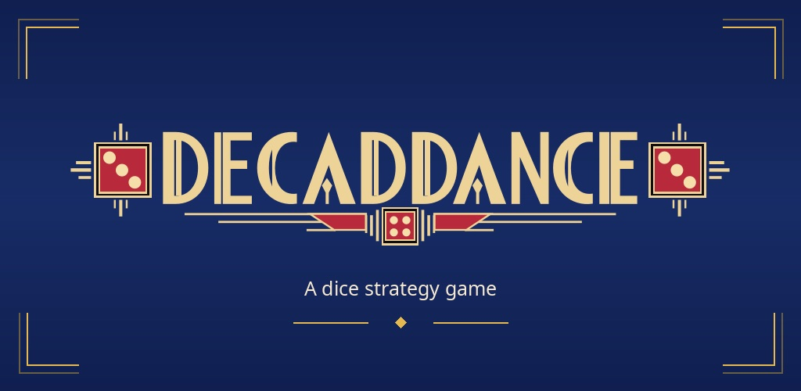
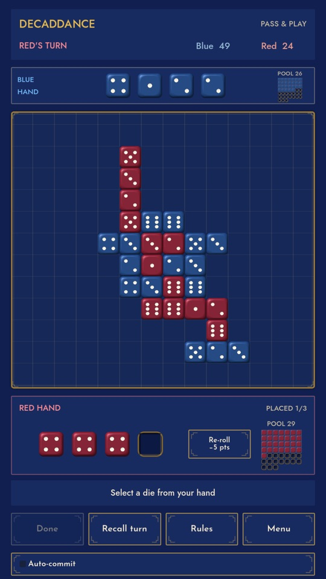
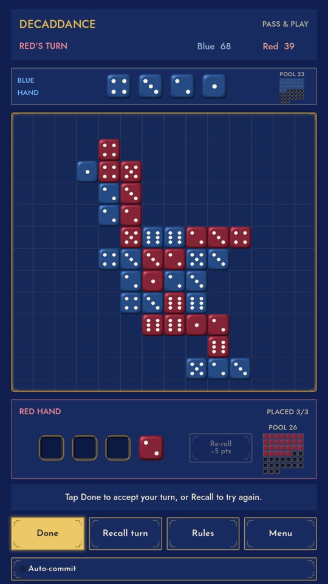
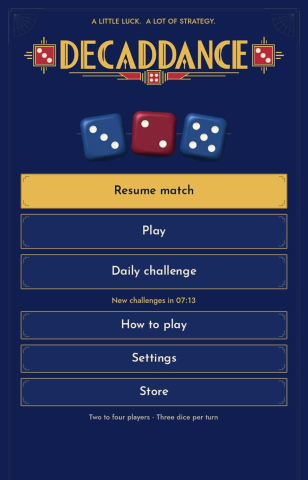

Make tens
Place dice on the board to build rows and columns that add up to 10.
A dice strategy board game about choosing where every die belongs. Make rows and columns that total 10, and surround your opponent's dice to swing the score.
In testing on Android
How to play ↓
Place dice on the board to build rows and columns that add up to 10.
Box in your opponent's dice to swing the score your way.
You get three placements a turn. Recall a die, rethink, and press Done when you're sure.
Play pass-and-play with a friend on one device, or take on computer opponents. Illustrated examples teach the rules, and an unfinished match is saved for later. The board works in portrait and landscape.



Development previews. Appearance may change before release.
Decaddance is in closed testing on Android. Release notes for each update will be listed here, newest first, with changes that came from your feedback marked You asked.
Found a bug, stuck on something, or have an idea for Decaddance? We read every message and reply to the ones that need an answer.
When your feedback changes the game, we say so in What's new, marked You asked.